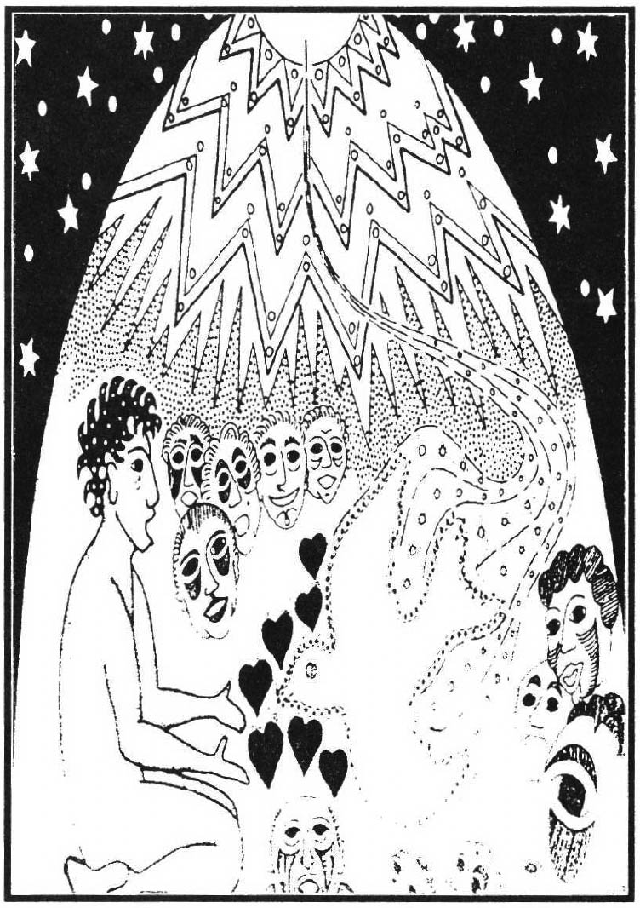

"In continued celebration of ten+ years in print, we present this intriguing dialogue. In doing so, we have the privilege and advantage of honoring three of this publication's previous editors. To each of you, deep gratitude from all dreamers! For an account by a dreamer who was the subject of a Dream Helper Ceremony, see DNB Vol. 5 No. 4 pp 6-7. (Editor)"
Henry: Back in the mid '70s, I was working with a dream incubation ritual at an A.R.E. (Association For Research and Enlightenment / the Edgar Cayce Foundation) camp where young people would spend a week or so engaged in various activities. I had a tent down by a river in view of the cafeteria, and I let it be known to the community that, should one of the kids want, they could work with me in the tent and have a special dream. At dinner time, the rest of the kids would see the volunteer incubant and I walk down to the tent and stay there until after dark. In the morning, when the kids were having breakfast, they'd see me walk down to the tent again, be there for a while, and then come back with the volunteer.
Naturally, there was a lot of curiosity. "What happens in the tent, Henry? What happens when the person's sleeping there?" Also, kids would come up to me and say, "I had a dream last night..." and proceed to tell me their dreams. I could recognize that the kids were picking up the issue that the incubant, the questor, was working on and dreaming about. Perhaps because of curiosity, they had "tuned in" to that person and had a similar type of dream. I thought this was very interesting. I didn't know what to do with it, except to note that there was a lot of incubation going on and much vicarious participation in the healing. Bob Van de Castle and I were once together at this camp. We were given the assignment to do a demonstration of dream telepathy for the kids, involve them in some kind of experiment. As we brainstormed on what kind of experiment to conduct, we brought our background relationship to bear.
I had a dream the night of our first committee meeting in which a group of us had gathered at A.R.E. We were in the dark, fumbling around, and didn't know what to do. Then, through some unknown way, we started a circular dance. Everyone had a circular dream shield, like a mandala with some kind of a symbol on it. As we would meet each other, passing in the dance, we would show our insignia and the person would recognize us by our symbol. In the middle of the dance, a fountain of sparks suddenly appeared, we were surrounded by light, and we could see. We realized that in the dance was the research method we were seeking which would lead to our enlightenment. I called this "The Dream of the Research Dance."
I had studied a little about similar patterns. For example, in the Sundance Indian ceremony, there's a group of dancers around a pole who are seeking visions. The pole serves as their common ideal. By contrast, in a traditional kind of dream telepathy experiment, there is a subject who is asleep in a laboratory and someone else who is awake, staring at pictures, who's trying to impress upon the sleeper images that hopefully will appear in the dream. Bob had done such a demonstration at camp in a previous summer. But that approach didn't fit our ideal because there wasn't the feeling that the various people involved—experimenter, sender, and receiver—were cooperating for acknowledgment. It was set up primarily to "prove" the existence of ESP.
One of the things that Cayce had indicated was that we would never understand ESP if our orientation was to "prove" its existence, because by the very act of trying to do it, we were singling out and separating people to examine their mental contents. Rather, he said, if we wished to understand telepathy, we should get people together in such a way that they had a desire to help one another but had no other way of doing it except through telepathy. Then they'd focus on the telepathy, focus on the follow-through of being helpful.
So Bob and I bounced these ideas around with my dream and the incidents of kids "spying" on others in the dream tent. We brainstormed what we called the "Dream Helper Ceremony."
Bob: I had been involved with investigations of dream telepathy in three different labs. When working with Calvin Hall in Miami, I turned out to be one of his better subjects. He got sufficiently intrigued to try it with some others and published a paper in one of the parapsychological journals about the very positive results. I'd also been a subject up at Maimonides Medical Center in a series of studies that was written up in the book, Dream Telepathy by Ullman, Krippner, and Vaughn. Later on, because I'd been so successful at Maimonides, I went out to Wyoming to Dave Foulkes' lab to see if I could be as equally successful there. Looking at that literature, I think there's a solid, substantial case that can be made for the empirical evidence supporting the telepathic hypothesis. So I'd had a lot of experience in having electrodes attached and finding ways of dreaming about the target. When I was at Maimonides, my motivation was clearly narcissistic, clearly wanting to get the highest scores that had ever been attained, come up "numero uno."
The Dream Helper Ceremony isn't to learn how to work with your dreams, though. It uses selfless motivation: to use your dreams to better help others.
Henry: The Dream Helper Ceremony is simply this: for one night, your dreams do not belong to you, but will belong to someone else, someone in your dream group who is suffering from some kind of personal problem, who has a serious dilemma in their life, who is willing to step forward and without revealing the nature of that problem, ask for help. Then dreamers form a circle around that person, dedicating their dreams to try to divine information or bless that person. The dreams are brought in the morning as gifts to help that person with whatever their dilemma might be.
We suggest that the dreamers' recall will be very good because they don't want to let the target person down. For some, the person will appear in the dream or they'll have a special dream which will give them a feeling that they really connected with the person and have found something of value. But most will feel that they've failed the person, that their dreams couldn't really have much to do with the person they're dreaming for. They might expect that if they were successful at this they'd have a dream in which they saw an X-ray portrait of the target person, saw into their past, and had voices describing what's wrong, but that's the rarity. Some people, like Bob, are so vigilant for their dreams that they're waking up every few minutes and writing down notes. I'd like to think that I'm a caring person but I still seem to wake up with only a sentence or two.
Invariably, however, when we start hearing everybody's dreams, by the time we're around the circle, people will be exclaiming about how there's so much in common. For example, if one person dreamt of finding an orange on the sidewalk, we'd think nothing of it. But when someone else reports a dream of an orange banner and still another person reports finding an apple on the sidewalk and somebody else dreams about a beautiful orange sunset, all of a sudden the orange in the dream starts to feel significant. We had one instance where my group had sex and aggression occurring together in dreams. The woman volunteer was concerned about her lack of direction with her creative talents. She had started a lot of different career directions, but nothing ever came of them and she was thinking that perhaps she had some kind of fear of success. She heard the dreams and though it hadn't been particularly on her mind, she recognized that the dreams were tuning in on the fact that she had been sexually molested as a child by a relative. It took place in a basement that appeared in a couple of people's dreams.
A person may say they want help with "X," but dreamers don't stop just at the surface level, they go deep into the problem. In this case, it was her childhood.
In the second group facilitated by Bob, the woman was concerned about a family incident in which one of her sons was discovered dead, and the other son was suspected, somehow, of being involved. Although the police had investigated the incident and cleared the son from any wrongdoing, the family had not been the same since. The living son was withdrawing and starting to show problems, and the family was showing doubt. So her secret question was, "How did my son die?"
In that group, most of the dreams had to do with accidents: tripping, crossed wires and communication, but not one image of violence. By all Hall and Van de Castle content analysis standards, there should have been some violence in those dreams. On the basis of the dreams, the group said, "Your son died by accident, perhaps tripped." The woman really wanted to believe that, but could she trust these dreams?
The two groups came together and compared the dreams. In the one circle, there was a woman who was asking about creativity and careers, and the response was violence in our dreams. Clearly, we were capable of dreaming of violence if we wanted to. But in the other circle, where the target person was concerned about violence, there was none to be found. It was as if we were saying, "Lady, we couldn't come up with violence, so perhaps you can take some confidence in that."
Bob: Nor any sexuality. The one group had all daughters, no sons; the other group had all sons, no daughters.
I was also able to point out to the woman that I did think the helpers picked up on her because that night she had a dream about a vacuum cleaner catching on fire. She was trying to look for a special kind of fire extinguisher because she had heard if you used water, it wouldn't do. One of the dream helpers had a dream about a vacuum cleaner that caught on fire and was concerned about not using water for it. If you were to go into our norms (for Hall and Van de Castle content analysis), vacuum cleaner isn't even listed. Then if you take a vacuum cleaner that's on fire and inject how it's going to be extinguished, I think we've picked up on you. According to our norms, you should have had aggression in 50% of the dreams; out of 12 people, 6 aggressive dreams, and yet we had zero. But the other group was loaded with aggression. So we were able to make a fairly compelling case for her.
When we saw her later at a dream convention, she was a totally different woman. Before, she had looked depressed, with her face sagging; a year later she looked exuberant.
Henry: Ever since that occasion, we opened up the size of the workshop so we could form two groups. Beforehand we liked to work together, but we realized it was more important to have the contrasts to look at afterward. The impact was reinforced.
The target person from each group will write out a statement of their question or problem and stick it under their pillows to sleep on it. After we share dreams the next morning, we will form a group consensus before we let the target person speak. There's a good reason for that. In the first years, the people would say that those consensus were very wrong, but that our dreams were blowing them away. Then we'd start to probe into what the dreams were really trying to get at. Also, without some sort of structure, after the problem is revealed there is a tendency for people to start throwing in their advice and ignore what the dreams are saying.
The last thing we do is come back together as one large group and hear a bit of feedback from the two people. Bob and I share with the group as a whole some of the common themes that are in each subgroup and point out the differentiation between the two issues. Whether or not there is resolution of the problem after the dream ceremony varies with the people involved. Some people have an immediate sense of resolution; some people are left scratching their heads; it's a delayed reaction.
Most work in telepathy is great the first few times you do the research, and then it peters out. With the Dream Helper Ceremony, over the years the effects have only grown rather than deteriorated. I guess it's a tribute to Cayce's insight, but one of the things that's so valuable about this and why it works is that the ceremony really invokes caring as well as curiosity.
Bob: A target person from last year recently told me that she felt that the Dream Helper Ceremony was one of the most important events in her life in highlighting different things and turning her around. I can't give any green stamp guarantee that that's going to happen, but there's certainly been some very powerful results, if it's done with a certain sense of honor and not being treated frivolously. You can't use it to ask "How can I make a million bucks?" You can't do it as a personal or classified ad, like "Where can I find a job?" or "Where can I find a 32-year-old hunk of a guy?" It goes far, far deeper than that.
When we did the one several years ago at Charlottesville, a woman asked a relatively superficial question. The group's dreams had a great deal of violence in them. One man had been a member of my dream group all year long, and I don't ever remember him ever having much in the way of violence. But in his dream he's pounding on someone's head with a hammer, and blood is pouring out. Another dreamt of a mother duck and a bunch of dead baby ducks in the water.
In terms of her alleged question, the dreams had nothing to do with it. This puts me in an awkward spot as a leader, because I'd like to have it work out that there's some relevance. But then, as we hung in there, she began to say things like, "I thought I got through all of that stuff in therapy; I've been in therapy for years trying to deal with it." When she was younger, she and her mother had a great deal of difficulty in their relationship. There was a time when the mother tried to put her in scalding hot water and kill her.
People can tune in on much deeper levels than one would choose. So it's important to pick the question wisely.
A desirable target person is someone who feels they have a problem of some emotional significance and would like help from the group. The best issues are usually something dealing with one's past, something dealing with relationships, something that's of deep significance. The target person doesn't have to disclose what that problem is if it's too personally embarrassing. So far, it's never happened, though. If we have a larger group of people volunteer than we need for the two, we put our names on pieces of paper, put them in a hat, and select two.
Henry: Then we have the two target people step out of the room while we create groups for them. We suggest they grab personal objects to entrust to each member of the group for the night: a ring, a key, a watch, whatever, that we will sleep with for their "vibes." Alternative "B", which is equally effective, is for them to get out a piece of paper, tear it into pieces and sign their name on each one.
Bob: Legibly. We have to have something, so that the Dream Helpers can take something of their essence back to their bedrooms tonight to link up with.
We write our dreams down, too, or it'd be too tempting to say the next day, oh, yeah, I did have a dream like that. It's best to have it documented ahead of time; otherwise, we could talk ourselves into all sorts of subjective judgments. Plus, we'll be giving those reports to the target people so that they'll have more of a chance to read them at their leisure or refer to them later.
It's important not to withhold anything. We can't embarrass ourselves because it's not our dreams. If we have any kind of "X" rated dreams, any kind of violent dreams, it's their dreams. So no matter how improbable, bizarre, or off the wall it seems, we report it.
The next day, people say, "I know this couldn't possibly have anything to do with it", but until we can see what the context is with the other dreams, we never know. One dream is like a point on a blackboard. It doesn't go anywhere until we get other dreams and start to see whether we've actually got a square, a triangle, or a parallelogram.
The target person is telling us, by virtue of volunteering, that they need help. And we're offering what is the most individual, precious, unique thing that we have coming from our souls: our dreams. To receive this God-given, powerful message that we could provide but to keep snoring and sleeping through, will make us feel very guilty the next morning! Certainly, if we don't remember, we can still show up at the group meeting the next day. So, I'm making it heavy on both sides: don't be a target person unless you're willing to let people walk all around and through the secret recesses of your mind and don't agree to be a Dream Helper unless you have a greater motivation than curiosity.
Henry Reed and Robert Van de Castle are the creators of the Dream Helper Ceremony, a group experiment involving dream telepathy. Their statements have been edited from a Ceremony held at an Association for the Study of Dreams conference in Santa Cruz, California. Linda Magallón, who lives, dreams, and writes from San Jose, CA., recorded and edited this conversation. All three are previous Editors of the Dream Network journal (formerly Dream Network Bulletin).